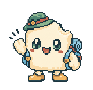
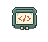
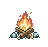
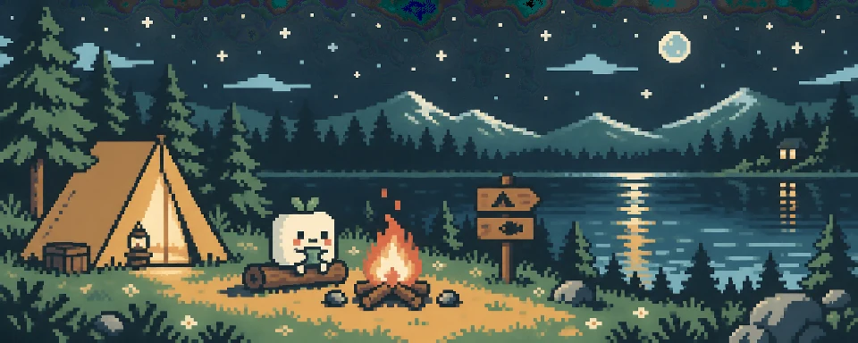

三年 Python，攒出来的底子。
高中选考「技术」一路学下来，语法、调试直觉和工程习惯慢慢积累起来。不吹天赋，只讲积累。
玩家已上线 / 杭州
写代码，玩游戏。
也带着相机，看世界。

不是完成品，是一个还在学习、
还在长的玩家。
欢迎来到我的小岛。选一个关卡，或者一起看完这段冒险。
角色档案 / 不是满级玩家
高中选考「技术」一路学下来，语法、调试直觉和工程习惯慢慢积累起来。不吹天赋，只讲积累。
自部署 Open WebUI，试 MCP 协议，在 Termux 里跑 Node.js。pi / codex / hermes / opencode 都折腾过。懂得不深的，正在一样一样补。
项目大多有 AI 帮忙，但想法、决定和收尾是自己的。说出口的事，要做完；LLM 跑偏的时候，程序得拦得住。

项目工坊 / 从想法到能运行
流程与界面为原理示意，不是实时数据或项目截图。
宝可梦研究所 / 爱好变成练习
一个给自己用的宝可梦工具站：图鉴、伤害计算、速度线，再接上能对话查数据的 Agent。
想配队、想算伤害的时候，也想试着理解：一套前后端系统，是怎么真的接在一起的。
图鉴模块
让 Agent 选择合适的工具，查询图鉴信息，再给出可读的回答。
这里展示功能结构，不运行实际宝可梦伤害计算。
游戏补给站 / 我的快乐来源
喜欢探索世界，也喜欢一局对战。
一张很个人的喜好表，
比“什么类型都玩”更诚实。
《旷野之息》与《王国之泪》
从《奥德赛》到朋友之间的一局对战
这次网页的像素界面，也借了一点那种感觉。
游戏与主机偏好依据你提供的个人排序表。
这是偏好记录，不是客观游戏评分。
摄影小径 / 换一双眼睛看世界
水面、树林、城市和夜色。写代码时想把事情弄明白，拍照时想把眼前这一刻留下来。
精选我的真实摄影作品。点照片可放大，点下方缩略图可自由切换。
像素的是界面，不是照片。
保留原作色彩与构图，发布的是去除 EXIF 的展示副本。
成长训练场 / 还没有通关
力扣为主，洛谷为辅。先自己想 20 分钟，再看题解，关掉之后重新写。
抓概念与几何意义，试着用 numpy 帮自己理解，而不只是记步骤。
能把东西做出来之后，还想解释清楚为什么它能工作。
这里是学习方向，不是已达成成绩。
三年 Python，从第一行 print 开始。
UsageMonitor，后来继续迭代成 VibeTrace。
把“会用 AI”一点点往“懂原理”推。
一起做点东西，也互相补齐不会的部分。

组队营地 / To be continued
想加入 AI Vibe：因为真正在用，也有做过的东西。
更想找一群同频的人，把想法继续往前推。
问题随便问，答不上来的我回去学。

终章加映 / 和我的 AI 分身聊聊
照片和项目讲完了，这次换一种方式认识我：和 年糕.Agent 聊几句。
消息会通过年糕电脑转发给模型供应商。页面仅在本次打开期间保留对话；聊天不落盘，服务端只持久化限额计数；请不要输入隐私、密码或令牌。
正在读取玩家存档……